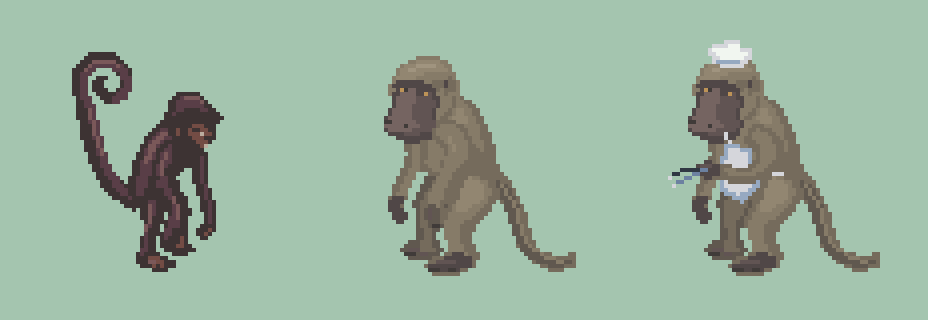
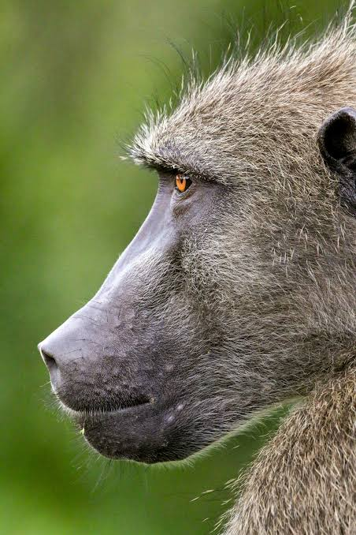
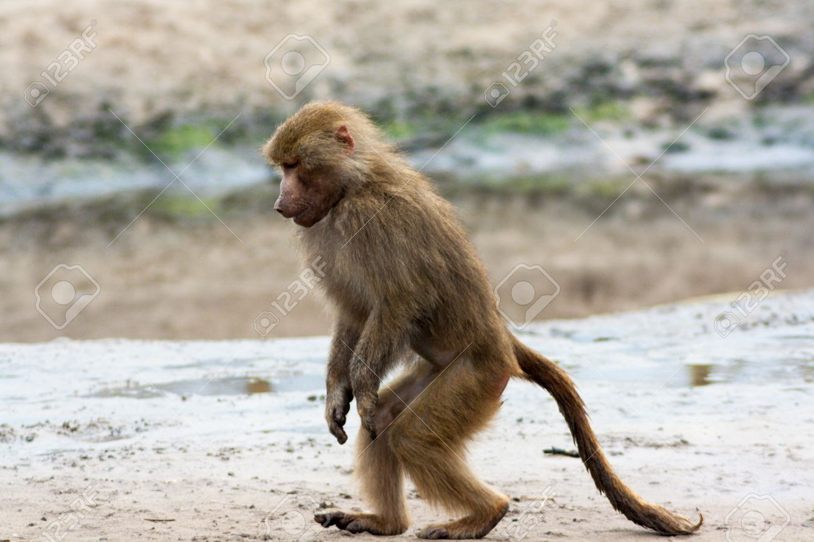

BANANA MONKEY / ART REVIEW
Baboon chef
Softer warm-grey fur, with the face and body turned into three-quarter views. Inspect the silhouette, motion and grill placement below.
Left · 6×
Angle
Animation
1.92 s loop
Small tongs lift with a fixed shoulder and planted feet.
All four angles
Front views show both brow planes and the broad muzzle end; rear views show the back and tools reaching away. All views share the same animation frame.
At the banana grills
Anatomy and reference photographs
Spider Worker, unclothed baboon, then chef—all at the same pixel scale.


